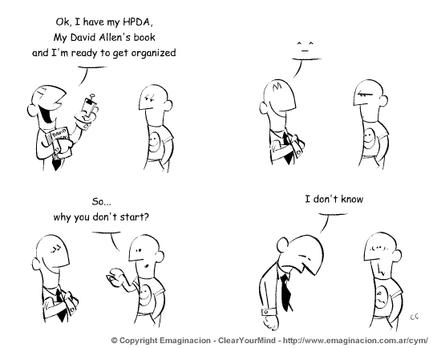

Classer ses actions avec GTD

Au dernier épisode nous avons vu, une fois une action choisie dans la todo list, comment mettre en place les conditions pour l’accomplir efficacement.
Mais quid si le choix de l’action lui-même dure plus de 30 secondes ? Ça n’arrivera que si votre liste d’actions est très longue. Avec une liste d’une dizaine d’actions l’identification de l’action suivante ne peut être que rapide et gérer un système de corbeilles multiples et de contextes serait une pure perte de temps.
Non à la procrastination
Et c’est là un point important : attention à ce que la recherche de productivité ne devienne pas une forme de procrastination ! Devant la multitude de méthodes, de livres, de blogs qui parlent de productivité, la tentation est grande de passer chaque jour des heures à absorber des techniques qui permettent de gagner… juste un peu moins. De même que l’email, les méthodes de productivité ne doivent pas devenir une fin en soi : l’objectif reste de faire des actions. Ne prenez pas des commandes, faites des sandwichs ! Alors autant l’acquisition de méthodes efficaces comme GTD ou plus spécifiquement Inbox zero apporte rapidement un gain énorme, autant il ne faut pas se leurrer : passer deux heures par jour à perfectionner ces techniques en fait un hobby qui peut certes être excitant mais ne vous fera pas gagner davantage de temps. Pour reprendre la loi des 80/20 dont nous parlions hier, 20% de GTD vous apporte 80% des gains de productivité. Donc si vous êtes devenu mordu, voyez-le bien comme un hobby et priorisez-le en conséquence par rapport à vos réels objectifs dans la vie. À moins que votre objectif dans la vie soit d’être un expert en productivité pour conseiller les autres, ne confondez pas objectifs et distractions.
Buckets
Cela dit, si vous avez vraiment besoin d’organiser vos actions, voici comment faire : nous avons pour l’instant deux corbeilles (ce que GTD nomme buckets) avec Action et Hold. Si Action grossit trop, il y a des chances que toutes les actions n’aient pas la même urgence. Il suffit donc de créer davantage de corbeilles pour accéder rapidement aux actions urgentes. Vous pouvez ainsi, pour conserver une terminologie anglaise, créer des corbeilles Today (les actions à faire aujourd’hui), This week (cette semaine), This month (sous 30 jours), et Someday (aucune urgence). Vous pouvez aussi en créer moins : faites-en le moins possible pour être efficace.
Chaque soir, la corbeille Today doit être vide. Le lendemain matin, vous traitez la corbeille This week et déplacez dans Today les actions à faire dans la journée. À la fin de chaque semaine This week doit être vide, et vous traitez This month pour récupérer les actions de la semaine suivante. Enfin une fois par mois (This month n’est pas forcément vide puisque c’est à traiter sous 30 jours mais pas toujours pour la fin d’un mois) vous traitez Someday.
Maintenant, losque vous terminez une action, vous êtes certain d’en trouver une urgente dans Today. Vous pouvez alors choisir en fonction du temps nécessaire, du niveau d’énergie requis (valider des congés contre argumenter un choix difficile), ou du contexte.
Contextes
Le contexte est l’ensemble des conditions matérielles qui fait que vous êtes à même d’accomplir une action dans un contexte et pas dans un autre : devant un ordinateur, au téléphone, dehors, à la maison, au travail, … Pour bien souligner la limitation physique qu’est un contexte, GTD recommande de les préfixer par « @ » : @boulot, @maison, @dehors, etc. Mais l’utilisation des contextes implique chaque fois que vous mettez une action dans Today de la classer suivant son contexte. Or si la plupart des actions que vous organisez ont lieu au bureau derrière un PC, les contextes n’auront pas de valeur ajoutée.
Projets
Pour finir ce tour de GTD, si une action vous paraît trop lourde ou mal définie elle peut être décomposée en actions plus courte : faites-en une sous-corbeille dans une corbeille Projects, et dans cette sous-corbeille listez les premières actions qui vous viennent à l’esprit pour accomplir ce projet. Ensuite mettez la 1ère de ces actions dans votre liste d’actions à faire, et lorsque vous l’aurez faite vous mettrez la suivante : assurez-vous que vous avez toujours une action à faire pour chaque projet en cours.
Conclusion
En pratique, les dossiers de messagerie ne sont plus adaptés lorsqu’il faut gérer des contextes, des projets ec. (notamment vous ne pouvez pas modifier les entrées à posteriori) et il faudra donc gérer des listes d’actions en dehors de la messagerie. Cela prend du temps, donc ne le faites que si la simple utilisation de la messagerie est clairement insuffisante. Ne perdez pas du temps à en gagner ! Si vous restez avec la solution messagerie, vous irez beaucoup plus vite en mettant en place des raccourcis clavier comme expliqué dans ce billet.
J’espère que cette série Inbox zero et GTD vous fera gagner autant de temps qu’à moi. Pour en consacrer davantage à ce qui compte vraiment pour vous. Comme disait l’autre : Stay hungry. Stay foolish.
